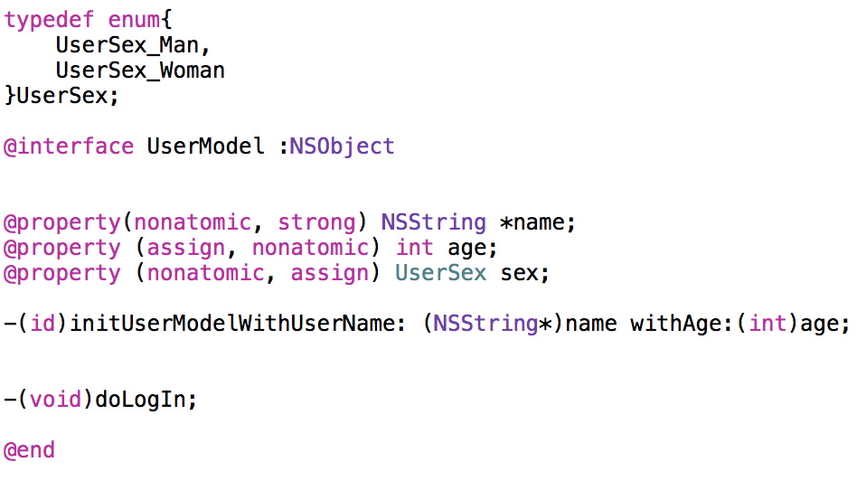

前言
上段时间去久邦和YY面试了几次，发现还是有挺多知识点有点模糊不清，其实挺多东西知道但是没有表达清楚，所以趁现在有时间把网上很经典的《招一个靠谱的iOS》面试题刷一遍，自己作答一遍以便查漏补缺。
正题
代码规范

1 | typedef NS_ENUM(NSUInteger, LFUserSex) { |
一个区分度很大的面试题
@property 后面可以有哪些修饰符？
答：nonatomic、atomic、strong、weak、assign、readwrite、readonly. 系统默认自带的有atomic、strong、readwrite、assign
什么情况使用 weak 关键字，相比 assign 有什么不同？
答：weak一般用来修饰一些需要防止循环引用的属性时使用
与assign的不同点
- weak一般用来修饰对象类型，assign用来修饰非对象类型比如基础数据类型
- weak修饰的属性在释放时会自动置为nil，assign则不会
怎么用 copy 关键字？
答：一般用来修饰NSString、NSArray、NSDictionary等有可变类型的的对象
这个写法会出什么问题： @property (copy) NSMutableArray *array;
答：首先这样写实际上等同于@property (atomic, copy) NSMutableArray *array,他会给在array的setter方法里有一个加锁的操作。第二点，使用copy修饰的时候，实际上在array的setter方法里会进行一次copy操作，相当于返回的数组是一个[可变数组 copy],addObjectsFromArray等方法时就会报错，报找不到对应方法的错误。
如何让自己的类用 copy 修饰符？如何重写带 copy 关键字的 setter？
答：遵循NSCopying协议，实现-copyWithZone:方法
1 | //如何重写带 copy 关键字的 setter？ |
@property 的本质是什么？ivar、getter、setter 是如何生成并添加到这个类中的？
答：属性的本质就是ivar+getter+setter方法，我们使用属性的时候，系统帮我们自动生成了成员变量、getter方法和setter方法
ivar在编译的时候会自动生成并合并到class_ro_t表中的ivar_list表中去，getter和setter则是放到了method_list中
@protocol 和 category 中如何使用 @property?
答：协议中使用属性，可以在协议中声明属性，然后在实现协议的类中使用@synthesize去生成成员变量和getter、setter方法，代码块如下：
1 | //协议中声明属性 |
分类中使用属性需要利用runtime去设置关联属性,代码块如下
1 | @interface Student (Test) |
runtime 如何实现 weak 属性？
答：runtime
Checklist
[※]weak属性需要在dealloc中置nil么？
答：ARC下不需要，系统会自动帮我们置为nil，MRC下需要，实际上ARC就是在编译期间帮我们插入了置为nil的代码
[※※]@synthesize和@dynamic分别有什么作用？
答：@synthesize是将属性等价于变量名，自动生成getter和setter方法
@dynamic则是告诉Xcode不要帮我们生成getter和setter方法，这时候我们需要自己去实现，不然不能进行赋值和取值操作
[※※※]ARC下，不显式指定任何属性关键字时，默认的关键字都有哪些？
答：automic、readwrite、strong（对象类型）/assign（非对象类型）
[※※※]用@property声明的NSString（或NSArray，NSDictionary）经常使用copy关键字，为什么？如果改用strong关键字，可能造成什么问题？
答：使用copy修饰的时候，在调用setter方法的时候会进行一次copy操作，返回的是不可变的副本，如果用strong的话，setter方法只是会进行一次retain操作，指向的还是原本传进来的对象，一旦原本的对象改变了，使用strong修饰的属性就会跟着改变。
1 | @property (nonatomic, strong) NSArray *sAarry; |
[※※※]@synthesize合成实例变量的规则是什么？假如property名为foo，存在一个名为_foo的实例变量，那么还会自动合成新变量么？
答：规则就是生成一个(下划线+属性名)的成员变量，已经存在了就不会再生成了，但如果你是写成@synthesize foo;而不是@synthesize foo = _foo;的话就会生成foo的成员变量，但前者是不规范的，如果我们直接写@property(nonatomic, string) id foo;Xcode在编译期间帮我们插入的就是@synthesize foo = _foo;
[※※※※※]在有了自动合成属性实例变量之后，@synthesize还有哪些使用场景？
答：给协议添加属性，用来给遵循协议的类添加共同属性，例如有A、B两个类和一个协议C，在协议C中声明属性d,然后A和B都遵循协议C，在A和B类中需要@synthesize d = _d来使其生成对应的成员变量和getter、setter方法。
[※※]objc中向一个nil对象发送消息将会发生什么？
答：什么也不会发生，因为在objc_msgSend的底层实现中首先判断的就是消息接收者是不是为空，如果为空就直接返回了。
[※※※]objc中向一个对象发送消息[obj foo]和objc_msgSend()函数之间有什么关系？
答：[obj foo]转化成底层C实现就是objc_msgSend(obj, @selector(foo))。
[※※※]什么时候会报unrecognized selector的异常？
答：调用的方法找不到的时候，准确说是在消息发送机制的消息转发阶段还是没有进行处理的话，就会报unrecognized selector的异常。也就是在- (void)forwardInvocation:(NSInvocation *)anInvocation这个方法中。
[※※※※]一个objc对象如何进行内存布局？（考虑有父类的情况）
答：
[※※※※]一个objc对象的isa的指针指向什么？有什么作用？
答：objc的isa指向其类对象，iOS中调用方法时就是通过isa指针找到类对象，再从类对象中去查找相应的方法。
[※※※※]下面的代码输出什么？
1 | @implementation Son : Father |
答：打印的都是Son，因为[super class]转化成底层C实现就是objc_msgSendSuper()
1 | //跟踪进去我们可以看到的传参，其中有一个是objc_super结构体 |
可以看出消息接收者还是当前的实例对象，[super class]只是从父类开始查找class方法（注释中可以看出）。
[※※※※]runtime如何通过selector找到对应的IMP地址？（分别考虑类方法和实例方法）
答：runtime中有两个API可以实现查找IMP的
[※※※※]使用runtime Associate方法关联的对象，需要在主对象dealloc的时候释放么？
答：不需要，主对象释放的时候，会调用dealloc，dealloc的底层实现中有一个判断是不是有关联对象的操作，如果有，这时候他会先把关联对象移除，底层实现如下
1 | void *objc_destructInstance(id obj) |
[※※※※※]objc中的类方法和实例方法有什么本质区别和联系？
答：类方法
类方法是属于类对象的,存储在其对应的元类对象中
类方法只能通过类对象调用
类方法中的 self 是类对象（这个要注意下，在同一个文件中，实例方法中的self是该类的实例对象，而类方法中是类对象）
类方法可以调用其他的类方法
类方法中不能访问成员变量
类方法中不能直接调用对象方法(可以通过在类方法中new一个实例对象，然后通过实例对象去调用实例方法)
实例方法
实例方法属于实例对象，存储在它的类对象中
实例方法只能通过实例对象调用
实例方法中的 self 是实例对象
实例方法中可以访问成员变量
实例方法中可以调用对象方法
没有get到这个问题的点，所以参考网上的答案如上
[※※※※※]_objc_msgForward函数是做什么的，直接调用它将会发生什么？
答：_objc_msgForward是用来进行消息转发的
[※※※※※]runtime如何实现weak变量的自动置nil？
答：runtime维护了一个叫做weak_table的哈希表，其中key是这个对象的内存地址，value是weak指针的地址也就是
Runtime会维护一个weak表，用于维护指向对象的所有weak指针。weak表是一个哈希表，其key为所指对象的指针，value为weak指针的地址数组。
具体过程如下：
1、初始化时：runtime会调用objc_initWeak函数，初始化一个新的weak指针指向对象的地址。
2、添加引用时：objc_initWeak函数会调用 objc_storeWeak() 函数，更新指针指向，创建对应的弱引用表。
3、释放时，调用clearDeallocating函数。clearDeallocating函数首先根据对象地址获取所有weak指针地址的数组，然后遍历这个数组把其中的数据设为nil，最后把这个entry从weak表中删除，最后清理对象的记录。
[※※※※※]能否向编译后得到的类中增加实例变量？能否向运行时创建的类中添加实例变量？为什么？
答：不行，1.因为编译后的类已经注册在 runtime 中,类结构体中的 objc_ivar_list 实例变量的链表和 instance_size 实例变量的内存大小已经确定，同时runtime会调用 class_setvarlayout 或 class_setWeaklvarLayout 来处理strong weak 引用.所以不能向存在的类中添加实例变量。
2.运行时创建的类是可以添加实例变量，调用class_addIvar函数. 但是的在调用 objc_allocateClassPair 之后，objc_registerClassPair 之前,原因同上.